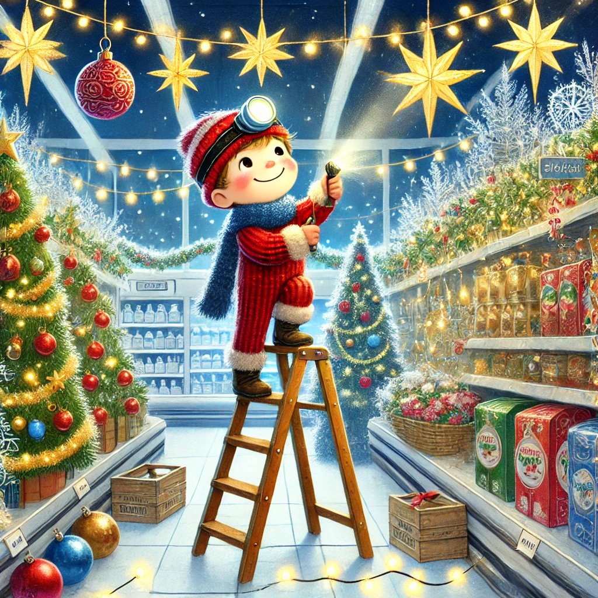
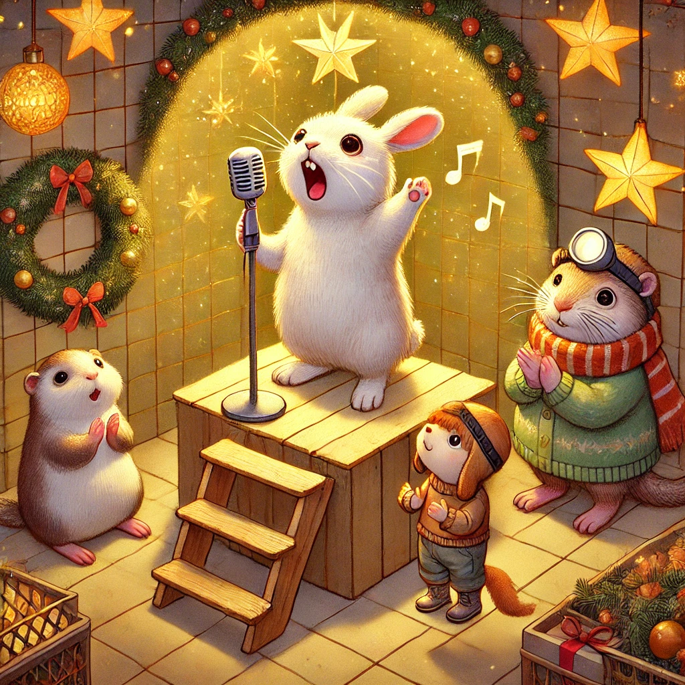
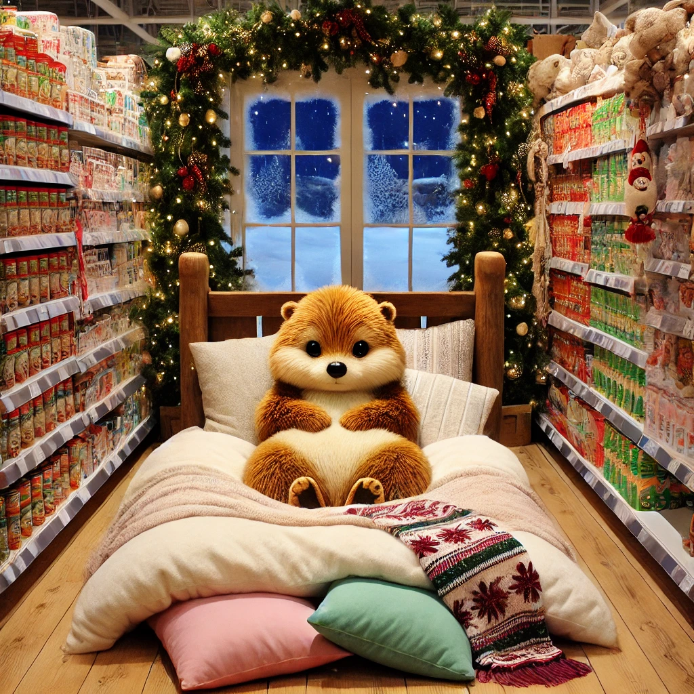

Es war einmal ein Wiesel namens Winnie, das oben auf dem Knabbereienregal eines Supermarkts in Leknes auf den Lofoten wohnte. Und es war Weihnachten.
Winnie hatte noch nie mit Freunden Weihnachten gefeiert. Letztes Jahr hatte sie sich mit drei Tüten Chips und einer Flasche Cola ferngesehen. Dieses Jahr war das ganz anders. Die drei hatten große Pläne: Winnie kümmerte sich um das Menü. Es sollte zur Vorspeise ein Käseplatte geben. Mit leckerem Brot und viel Butter. Zum Hauptgang hatte sie sich die größte Pizza der Welt ausgesucht. Winnie konnte eigentlich nicht kochen, aber sie hatte sich überlegt, viele viele Tiefkühlpizzen aneinander zu legen und Lofotens größte Pizza zu basteln. Und zum Nachtisch hab es Kakiobstsalat. Ein Festschmaus!
Herr Hase organisierte die Musik. Die drei wollten tanzen und singen, dass sich die Balken biegen und Herr Hase hatte ein Solo eingeübt. Biep hatte dekoriert. Überall hingen goldene Sterne, rote Kugeln, silberne Schneeflocken und Lichter. Er hatte auch Kerzen aufgestellt. Es war so weihnachtlich, dass die drei ganz ehrfürchtig wurden. Besonders aber deswegen, weil sie einen so schönen Tag teilen konnten.
Sie trafen sich am frühen Nachmittag und sangen und tanzten ausgelassen bis es dunkel wurde. Herr Hase beeindruckte mit einem herrlichen Solo von O Tannenbaum. Besonders Winnie klatschte laut und lange.
Sogar Winnies Pizzaidee gelang und sie langen lange mit Kugelrunden Bäuchen unter dem Weihnachtsbaum bevor sie Geschenke auspacken konnten. Sie hatten sich zufällig alle dasselbe geschenkt: viele Abenteuer mehr im nächsten Jahr. Die Freunde hatten das schönste Weihnachtsfest ihres Lebens.
